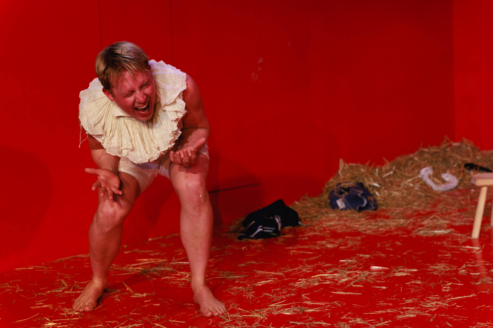
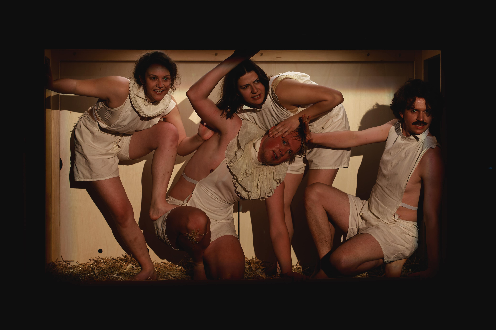

„Warum kann man im Theater so gut Witze über Arme machen? – Weil sie sich die Karten eh nicht leisten können.“ Nichts läge der Hospizclownin Svenja eigentlich ferner als solche Bösartigkeiten. Und doch entfahren sie ihr immer häufiger. Dabei will sie, die linke Kulturschaffende, die Welt doch zu einem besseren Ort machen, angefangen bei ihrer Heimatstadt Blinden. Ihre Methoden der Wahl: der von ihr entwickelte „Humornismus“, eine Mischung aus Humor und Humanismus, und ein – derzeit noch spärlich frequentierter – Videoblog. Der Don, die fiese, neoliberale Abspaltung Svenjas, ergreift jedoch mehr und mehr Besitz von ihr. Und im selben Maß wächst plötzlich auch die Anzahl ihrer Follower. Aber ob sie damit auch Püppi, die altlinke Hospizbewohnerin für sich gewinnen kann, die eine Nachfolge für ihr Arbeitercafé „Zur Goldenen Möwe“ sucht? Denn da ist ja auch noch Aram, der „Dienstleistungsproletarier“, der ihr mit seinem Migrationshintergrund gewaltig die Tour vermasseln könnte.


Fotos: Philip Brunnader